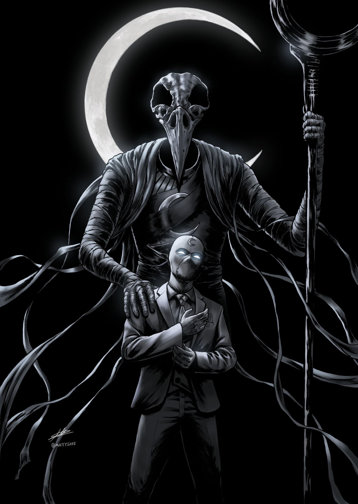
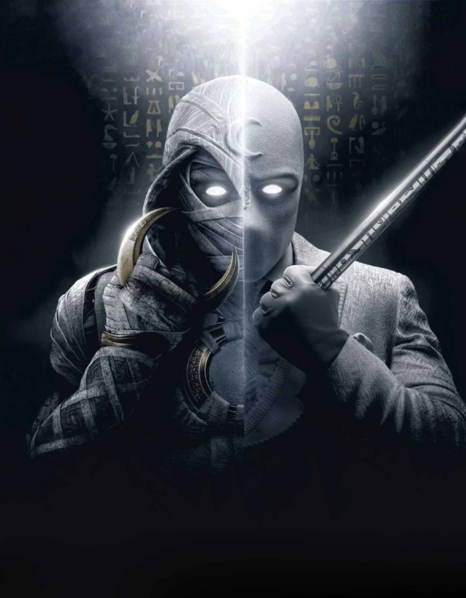
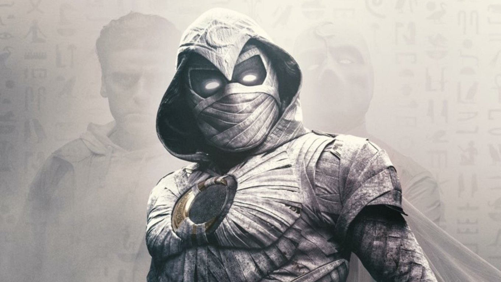

About
Moon Knight is an American television miniseries created by Jeremy Slater for the streaming service Disney+, based on the Marvel Comics featuring the character of the same name. It is the sixth television series in the Marvel Cinematic Universe (MCU) to be produced by Marvel Studios, sharing continuity with the films of the franchise. Slater serves as head writer with Mohamed Diab leading the directing team.
Oscar Isaac stars as Marc Spector / Moon Knight and Steven Grant / Mr. Knight, two alters of a man with dissociative identity disorder (DID), with May Calamawy, Karim El Hakim, F. Murray Abraham, Ethan Hawke, Ann Akinjirin, David Ganly, Khalid Abdalla, Gaspard Ulliel, Antonia Salib, Fernanda Andrade, Rey Lucas, Sofia Danu, and Saba Mubarak also starring. The series was announced in August 2019, with Slater hired in November. Diab was hired to direct four episodes in October 2020, with directing duo Justin Benson and Aaron Moorhead joining in January 2021 to direct the other two. Isaac was confirmed to star at that time, and used different accents to differentiate Spector's various identities. Filming took place from April to October 2021, primarily in Budapest as well as in Jordan, Slovenia, and Atlanta, Georgia.
Moon Knight premiered on March 30, 2022, and ran for six episodes, concluding on May 4. It is part of Phase Four of the MCU. The series received positive reviews, with particular praise for Isaac's and Hawke's performances and the darker tone compared to previous MCU series.
Cast
Oscar Isaac as Marc Spector / Moon Knight, Steven Grant / Mr. Knight, and Jake Lockley: A man with dissociative identity disorder (DID),[1] whose identities are distinct characters,[2] and were differentiated in the script by their attitudes. Isaac chose to take this further by giving them different accents.[3] He enjoyed being able to do "something really fucking nutty" with his portrayal, including exploring Spector's complex mind. Embodying each of the personas was a technical challenge for Isaac that required a lot of energy.[4] His brother Michael Benjamin Hernandez served as his body double, allowing Isaac to act against someone for scenes where multiple identities meet.[5] To prepare for the role, Isaac read Robert B. Oxnam's book A Fractured Mind, which he called his "bible".[6]
Marc Spector is a Jewish-American mercenary who becomes the avatar for the Egyptian moon god Khonshu.[1][7] Isaac used his own American accent for Spector,[3] and "leaned into this Chicago guy who's pushing people away" for his portrayal of Spector, calling him a jerk.[7] Executive producer Kevin Feige described Spector as a "brutal" action hero,[8][9] and said the series would not pull back from portraying the violence of the character.[9] Carlos Sanchez and David Jake Rodriguez portray Spector as a child and teenager, respectively
Steven Grant, one of Spector's alters, is a mild-mannered British gift-shop employee who becomes Mr. Knight, Grant's persona when he is Khonshu's avatar.[1][11]: 6–7 Isaac put on a London English accent for Grant that he suggested was intentionally "bizarre" and unconvincing.[3] He was inspired by the accents of the Jewish community living in Enfield, London, as well as English comedic performers such as presenter/actor Karl Pilkington from the British travel comedy series An Idiot Abroad,[12] and Peter Sellers.[13] Isaac added that Grant does not have great social skills and is "longing for connection". Grant has tension with Spector when the two personalities first become aware of each other.[7] Mr. Knight uses Grant's knowledge of ancient Egypt to help get out of conflicts with wits and puzzle solving, which is a contrast to Spector's Moon Knight persona.[11]: 7
Filming also occurred in Slovenia,[105] for one week in Wadi Rum, Jordan, and concluded in Budapest and Jordan by the beginning of October,[53][106] at which point production moved to Atlanta, Georgia.[53] It had wrapped by October 14.[107] Isaac said filming felt "handmade",[4] with Diab bringing local authenticity and attention to the smallest details such as including the correct text of a prayer over a shop.[66]: 54 Hawke was appreciative of the Egyptian Diab for leading the series, since he did not approach the series "with the eyes of an American", but as someone who had grown up in the country.[11]: 8 The production had hoped to film the series in Egypt but were unable to in part because of the country's political climate and censorship issues; Hollywood production had not been able to shoot in the country for some time.[2
Summary
Steven Grant works at the British Museum in London where he hopes to become a tour guide using his knowledge of Ancient Egypt. After going to sleep one night, he wakes up in the Austrian Alps and witnesses a cult meeting led by Arthur Harrow, who demands a scarab Grant unknowingly has in his possession. As he attempts to escape, he has several blackouts and hears a mysterious voice in his head before waking up in his home. Grant realizes that two days have passed since he went to sleep. He finds a hidden phone and keycard in his apartment and receives a call from the most frequent number in the phone's call log, a woman named Layla who addresses him as Marc. The next day at work, Grant is confronted by Harrow who reveals that he is a servant of the Egyptian goddess Ammit. Grant escapes from Harrow but is forced to remain at work that night on his own to make up for being late. Harrow summons a jackal-like creature to attack Grant, but his "reflection" asks to take control of their body. Grant agrees, transforming into a cloaked warrior who kills the jackal.
Grant is blamed for the damage caused by the jackal creature, due to it not appearing on the museum's security cameras, and is fired. He uses the keycard to access a storage locker where he finds the scarab. He speaks with his "reflection", another identity in Grant's body that introduces himself as American mercenary Marc Spector, the current avatar of the Egyptian moon god Khonshu. Grant is confronted by Layla, Spector's wife, who is unaware of Grant's existence, before being arrested by police officers working for Harrow. Harrow reveals that he was Khonshu's previous avatar until he chose instead to follow Ammit. He explains that he wants to use the scarab to find Ammit's tomb and resurrect her so she can purge humanity of evil by wiping out everyone who has or will commit evil deeds. Layla rescues Grant, but Harrow summons another jackal creature. Grant manages to summon a suit of his own to fight the jackal, but is overpowered and allows Spector to take control. Spector kills the jackal but loses the scarab to Harrow. Khonshu threatens to claim Layla as his next avatar if Spector fails to stop Harrow.
Harrow and his followers discover the location of Ammit's tomb in the Egyptian desert. In Cairo, Spector and Grant both experience blackouts while tracking a lead to Harrow's location. After failing to gain information, Khonshu calls a council between his fellow Egyptian gods and their avatars to warn them of Harrow's plans, but Harrow successfully denies the accusation. Hathor's avatar, Yatzil, tells Spector to find the sarcophagus of a medjay who knew of the location of Ammit's tomb. Layla finds Spector and takes him to meet with Anton Mogart, an acquaintance who owns the sarcophagus. Harrow arrives and destroys it, forcing Spector, Grant, and Layla to fight off Mogart's men and escape into the desert. Grant assembles some of the sarcophagus fragments into a star map, but it is two thousand years out of date. Khonshu uses his powers to briefly turn back the night sky to the correct night, allowing Grant and Layla to find Ammit's tomb. The other gods imprison Khonshu in an ushabti for this, leaving Grant and Spector's body without Khonshu's powers
End
Grant and Layla find a deserted campsite at the location of Ammit's tomb, which is a maze in the shape of the Eye of Horus. They discover that some of Harrow's men have been killed by undead Egyptian priests, who then attack Grant and Layla. Layla defeats the priests but encounters Harrow, who claims that Spector was one of the mercenaries who murdered her archaeologist father, Abdallah El-Faouly. Grant finds the tomb and discovers that Ammit's last avatar was Alexander the Great; he retrieves Ammit's ushabti from inside Alexander's body. Layla angrily confronts Spector, who reveals that his partner killed Layla's father and Spector himself before Khonshu revived Spector as his avatar. Harrow arrives and shoots Spector, who wakes up in a psychiatric hospital populated by people from his life. After escaping from Harrow, who appears as a therapist at the hospital, Spector finds Grant in a separate body trapped in a sarcophagus. They also see a second sarcophagus with someone else trapped inside before being greeted by a female hippopotamus-headed figure
The hippopotamus-headed woman is the Egyptian goddess Taweret, who explains that Spector and Grant are dead and the "psychiatric hospital" is a boat sailing through the Duat, the Egyptian afterlife. She weighs their hearts on the Scales of Justice to determine whether they can enter the Field of Reeds, but the hearts are imbalanced by hidden memories that she suggests they explore together. Grant sees a memory of Spector's younger brother Randall drowning and Spector's mother blaming him for it, while Spector shows Grant how he became Khonshu's avatar while on a mission with his partner Bushman, who murdered Layla's father. Spector and Grant convince Taweret to help them return to the living world so they can stop Harrow, and she steers the boat towards the Gates of Osiris. Spector reluctantly explains that he unknowingly created Grant as a result of their mother's abuse. Grant and Spector reconcile with each other, but their scales fail to balance and hostile spirits attack them, dragging Grant into the Duat where he turns to sand. The scales balance and Spector finds himself in the Field of Reeds.
Harrow frees Ammit and kills the avatars of the other Egyptian gods. Layla finds Khonshu's ushabti and releases him. Spector refuses to stay in the Field of Reeds and returns to the Duat to rescue Grant. With Taweret's help, they escape through the Gates of Osiris and awaken in their body. Khonshu re-bonds with them, restoring their powers. Layla discovers that Ammit can be re-bound by multiple avatars and agrees to become the temporary avatar of Taweret. They join Spector, Grant, and Khonshu in fighting Harrow and Ammit. Harrow overpowers Spector and Grant, but they experience a blackout during which time they somehow defeat Harrow. Spector and Layla seal Ammit in Harrow's body, imprisoning her, and Khonshu urges Spector to execute Harrow and Ammit. Spector refuses and orders Khonshu to release him and Grant from their service. The pair find themselves in the "hospital", where they reject the vision and choose to continue their new life together as heroes. In a mid-credits scene, Harrow is killed by Jake Lockley, Spector and Grant's third alter, who is still working with Khonshu.